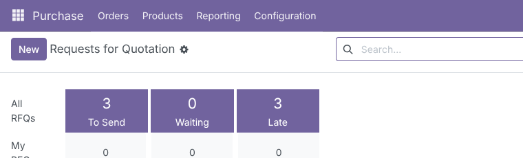
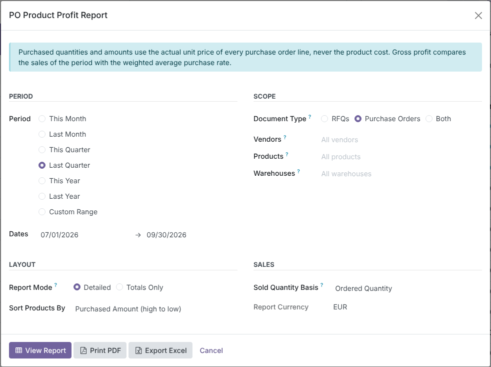
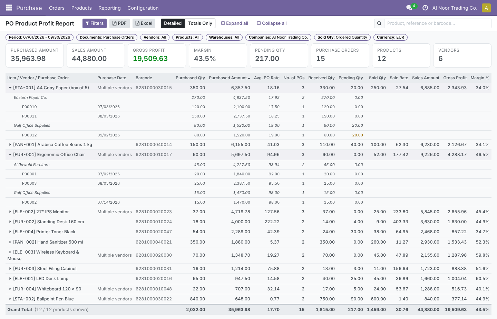
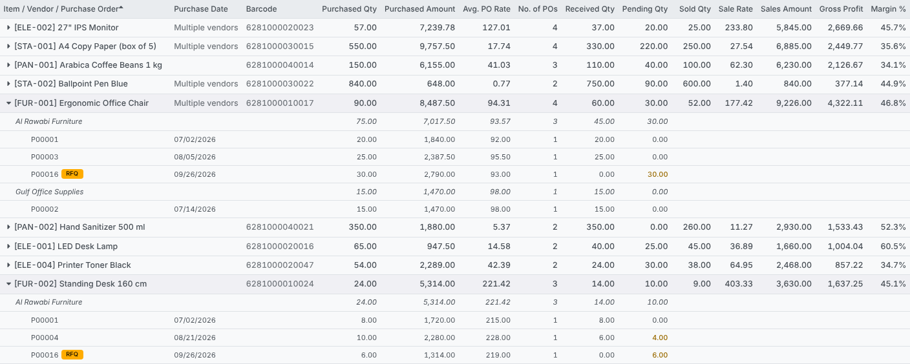
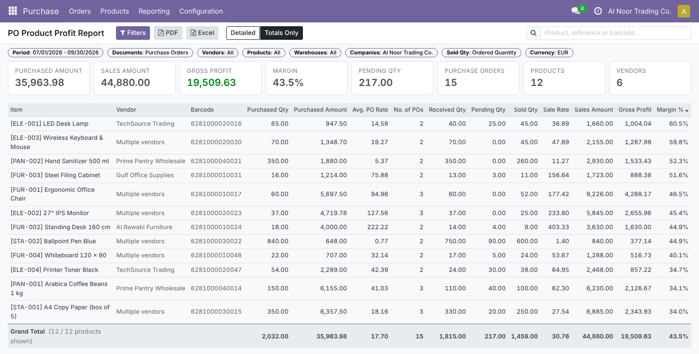
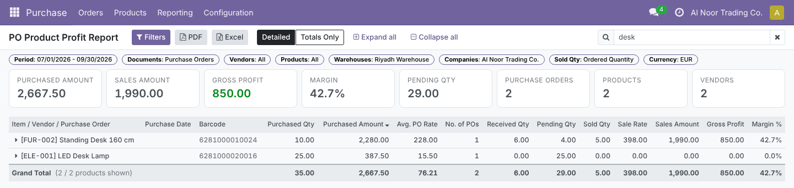
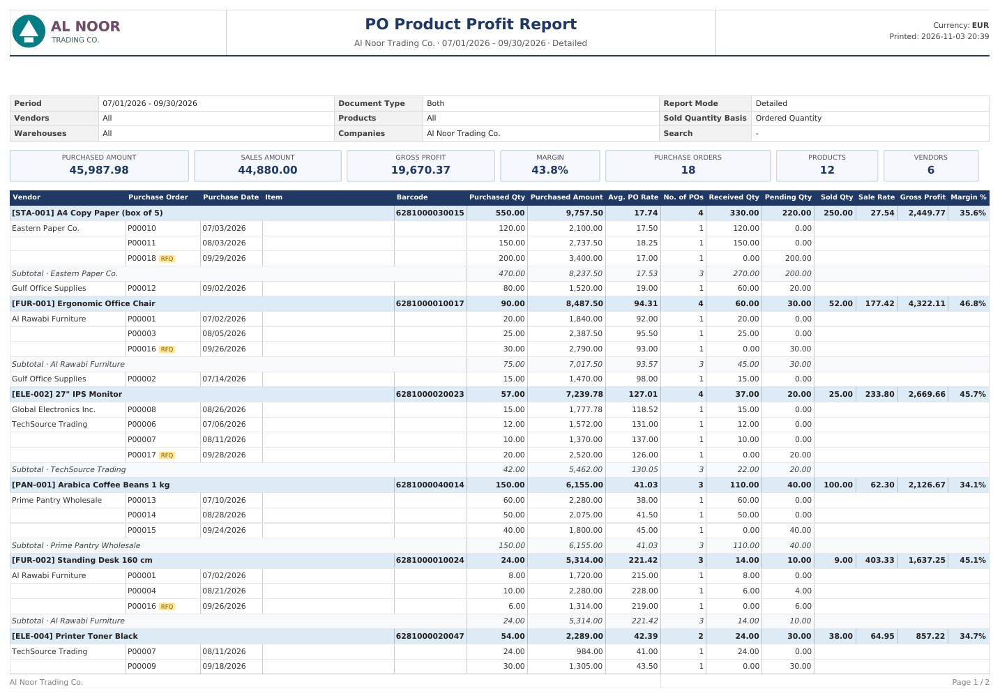
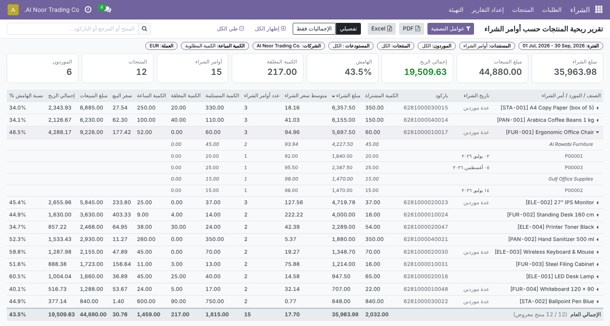
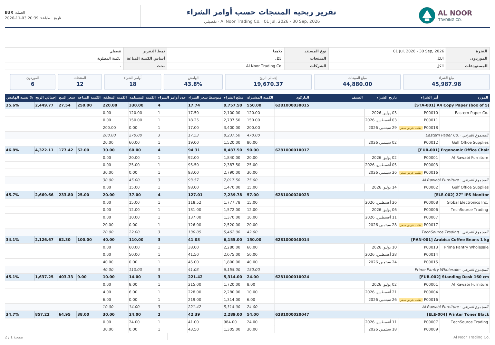
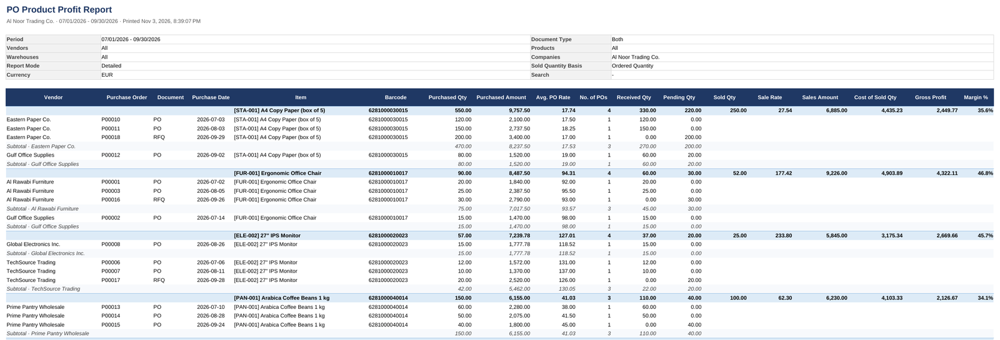

See, for every product, what you bought at the actual purchase order rates, what is received and still pending, what you sold in the same period and the gross profit you made. Drill down to vendor and PO, then print it as a PDF or export it to Excel.
Purchasing managers need one answer: for what we bought this period, at the prices we really paid, how much have we received, how much is still open, and are we making money when we sell it?
Four steps from the Purchase menu to a report you can share.
Screenshots use demo data for a trading company: 12 office-supply products, 6 vendors, two warehouses (Jeddah and Riyadh), Q3 2026 purchases at tiered prices (one in USD, one line bought by the dozen), open RFQs and confirmed sales.
The report is added under Purchase › Reporting › Product Profit (PO Rates), beside the standard Purchase analysis, which stays untouched. It is visible to Purchase Administrators.

Period presets (This Month, Last Month, This Quarter, Last Quarter, This Year, Last Year) or a Custom Range; Document Type: RFQs, Purchase Orders or Both (cancelled orders are always excluded); Vendors, Products, Warehouses and Companies; Report Mode: Detailed or Totals Only; Sort Products By amount, profit, margin, quantities or name; and the Sold Quantity Basis: ordered, delivered or invoiced. Buttons: View Report, Print PDF, Export Excel.

Eight summary cards (Purchased Amount, Sales Amount, Gross Profit, Margin, Pending Qty, Purchase Orders, Products, Vendors) above a table with Purchased Qty, Purchased Amount, Avg. PO Rate, No. of POs, Received Qty, Pending Qty, Sold Qty, Sale Rate, Sales Amount, Gross Profit and Margin %. Click a product to expand it into vendors and purchase orders, with a vendor subtotal for each.

With Document Type = Both, open requests for quotation appear with an RFQ badge next to confirmed orders. Pending quantities are highlighted, and product, vendor and PO names open the record in one click. PO detail is fetched only when you expand a product, so the page stays fast however long the period is.

Switch between Detailed and Totals Only without reloading. Click any column header to sort (here by Margin %). The Vendor column shows the supplier, or Multiple vendors when a product came from more than one.

Search by product name, internal reference or barcode. Grand totals follow the search. With a Warehouses filter, purchases count by the warehouse of their receipt operation and sales by the warehouse of the sale order. Below, Riyadh Warehouse only: the LED Desk Lamp was bought for Riyadh but sold from Jeddah, so it shows no sales here.

A4 landscape with its own compact header (company logo, period, mode, currency, print time) and footer (page X / Y). The header has a fixed height inside a reserved top margin, so it never overlaps the table, and column headers repeat on every page. Product lines, vendor subtotals and the grand total are banded for reading on paper.

A complete ar_001 translation ships with the module. Layouts mirror for right-to-left languages, while numbers, negative signs, product references such as “[FUR-001] Ergonomic Office Chair”, PO numbers and dates keep their left-to-right order, both on screen and in the PDF.


A title and filter block, frozen headers, AutoFilter and landscape print setup. Product totals, vendor subtotals and the grand total are live SUBTOTAL formulas, so the totals stay right when you filter the sheet. Detailed mode uses Excel outline levels: collapse to product totals with the [1] [2] [3] buttons. Extra columns: Document (PO / RFQ), Sales Amount and Cost of Sold Qty. Large exports are streamed row by row, so memory stays flat.

All amounts are untaxed and converted to the report currency.
| Figure | Definition |
|---|---|
| Purchased Qty | PO line quantities in the product’s unit of measure (2 Dozens = 24 Units). |
| Purchased Amount | Sum of PO line subtotals: the actual unit price × quantity, after any line Discount, as stored on the purchase order line. |
| Avg. PO Rate | Purchased Amount ÷ Purchased Qty. |
| No. of POs | Distinct purchase orders. A PO with the same product on two lines counts once. |
| Received / Pending Qty | Received quantity of the lines; Pending = Purchased − Received, never below zero, per line. |
| Sold Qty / Sales Amount | Confirmed sale orders dated in the period, by the chosen basis: ordered, delivered or invoiced quantity. |
| Sale Rate | Sales Amount ÷ Sold Qty. |
| Gross Profit | Sales Amount − Sold Qty × Avg. PO Rate. |
| Margin % | Gross Profit ÷ Sales Amount × 100. |
Each of these is covered by the automated tests.
Odoo 18.0 on 100,000 purchase orders with 1.2 million lines, 2,000 products and 600,000 sale lines (PostgreSQL 16, 2 vCPU). Median of 5 runs, product rows and grand totals included.
| Selection | Time |
|---|---|
| Drill-down: one product, 3 years of PO detail | 0.01 s |
| One product, 3 years | 0.02 s |
| One vendor, 3 years | 0.09 s |
| One month, all products | 0.18 s |
| One quarter, all products | 0.28 s |
| Search by reference, 3 years | 0.62 s |
| Everything, 3 years (1.2M lines) | 1.7 s |
The report shows purchase prices and sales figures together, so access is restricted.
| Who | Sees |
|---|---|
| Purchase / Administrator | The menu, the wizard, the web view, PDF and Excel. |
| Purchase / User and other users | No menu; direct calls to the report are refused (checked on the server, tested). |
| Multi-company | Only companies allowed in the user’s company switcher, whatever is sent by the browser. |
| Wizard records | Temporary (transient) records, cleaned up automatically by Odoo. The web view itself keeps no data on the server between clicks. |
| Odoo version | 18.0, Community and Enterprise |
| Depends on | purchase_stock, sale_stock |
| Python dependency | None beyond Odoo (xlsxwriter ships with Odoo) |
| Menus | Purchase › Reporting › Product Profit (PO Rates) |
| Settings | None needed; every option is in the wizard |
| Models | po.product.profit.wizard (wizard), po.product.profit.engine (SQL engine), po.product.profit.xlsx (Excel), po.product.profit.format (number formatting), report.po_product_profit_report.report_po_product_profit (PDF) |
| Database | 4 covering indexes on purchase_order, purchase_order_line, sale_order, sale_order_line; dropped on uninstall |
| Standard reports | None replaced or modified |
| Translations | Arabic (ar_001), 123 terms, 100% |
| Automated tests | 16: multi-tier PO rates, all metrics, units of measure, RFQ / PO / Both, timezone boundaries, warehouse filter, foreign currency, grand totals and paging, drill-down and streaming, sorting, search and sold basis, security and input checks, wizard actions, PDF (detailed, totals, Arabic RTL), Excel, indexes, same product twice on one PO |
| License | LGPL-3 |
Questions, a demo, or an adaptation to your own process? Get in touch.
✉ ibrahim.yahiah@gmail.com LinkedIn: Ibrahim YahiaAuthor: Ibrahim Yahia · License: LGPL-3